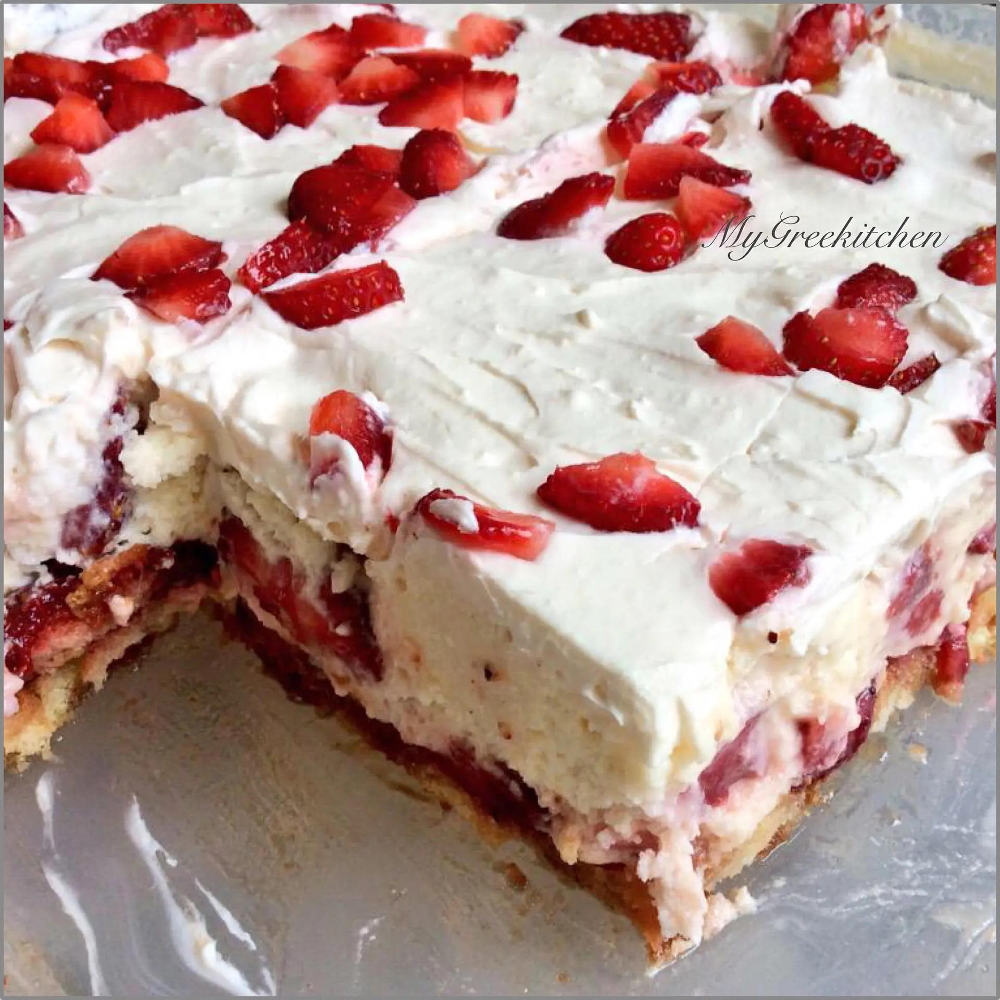

Delicious No Bake Strawberry Shortcake made by Alexia Papadopouiou that only takes 8 steps, 7 ingredients, 5 tools, 4 to 5 hours to complete and has 6 to 8 servings.

This No Bake Strawberry Shortcake image was taken from Foodista.com
Ingredients and Amounts
1 box vanilla instant pudding
1/2 cup strawberry juice
1 1/2 cups nonfat milk
1 teaspoon vanilla extract
24 Savoiardi Lady Fingers
1 pound fresh strawberries, hulled, sliced and patted dry
220 g whipped cream, chilled
Preparations and Instructions
Steps:
In a bowl Whisk pudding, milk and vanilla and set aside.
With a hand mixer or in the bowl of a stand mixer, whip the cream until it just holds, stiff peaks. ( Add sugar if desired).
Dip ladyfingers briefly in strawberry juice and arrange them in the bottom of a dish.
Spread half the pudding mixture over the ladyfingers.
Place the strawberries in a single layer over the pudding.
Repeat with remaining ladyfingers, pudding mixture and strawberries.